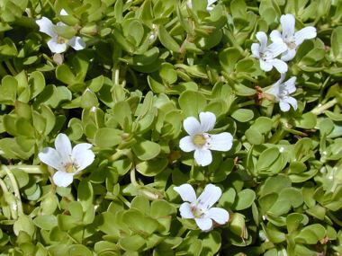
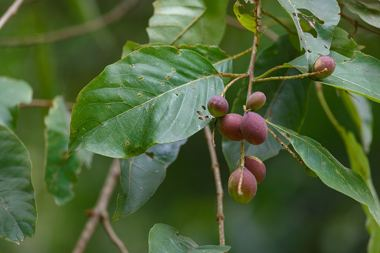
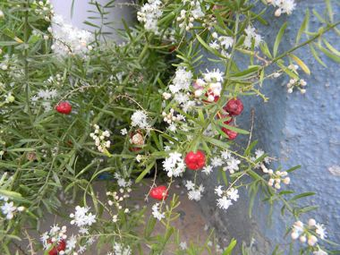
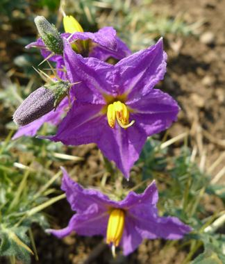

Skip to content
अवध जैव विविधता एटलस
Awadh Biodiversity Atlas
This month
Explore
Make & use
About
☀
☾
Home
›
Explore
Medicinal plants
औषधीय पौधे
17 species of the Basti–Ayodhya countryside.
घृतकुमारी
Aloe Vera
Aloe vera
अश्वगंधा
Ashwagandha
Withania somnifera
मंडूकपर्णी
Asiatic Pennywort
Centella asiatica
भुई आँवला
Bhumi Amla
Phyllanthus fraternus

ब्राह्मी
Brahmi
Bacopa monnieri
भृंगराज
False Daisy
Eclipta prostrata
गोखरू
Gokhru
Tribulus terrestris

हरड़
Haritaki
Terminalia chebula
तुलसी
Holy Basil
Ocimum tenuiflorum
कालमेघ
Kalmegh
Andrographis paniculata
पुदीना
Mint
Mentha arvensis
पुनर्नवा
Punarnava
Boerhavia diffusa
सदाबहार
Sadabahar
Catharanthus roseus
Toxic
सर्पगंधा
Sarpagandha
Rauvolfia serpentina
Toxic
शंखपुष्पी
Shankhpushpi
Evolvulus alsinoides

शतावरी
Shatavari
Asparagus racemosus

भटकटैया
Yellow-berried Nightshade
Solanum virginianum